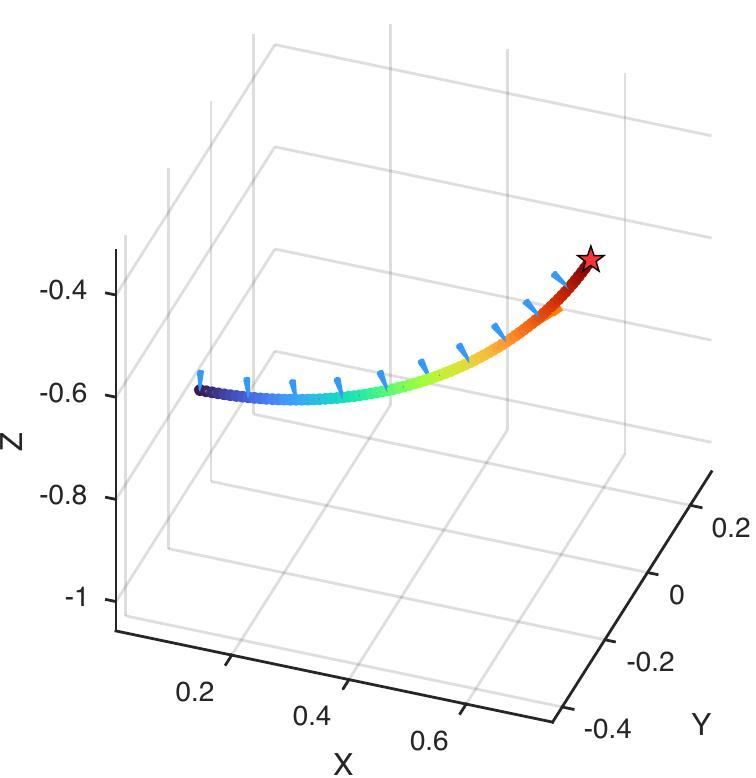
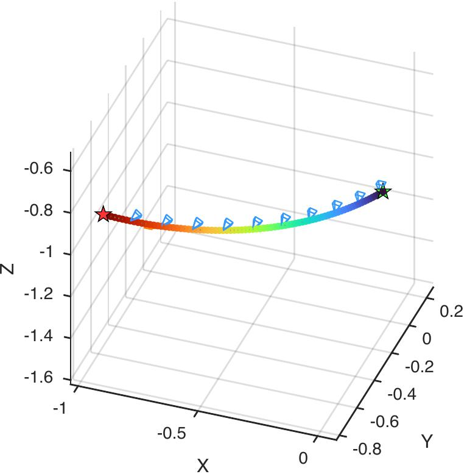
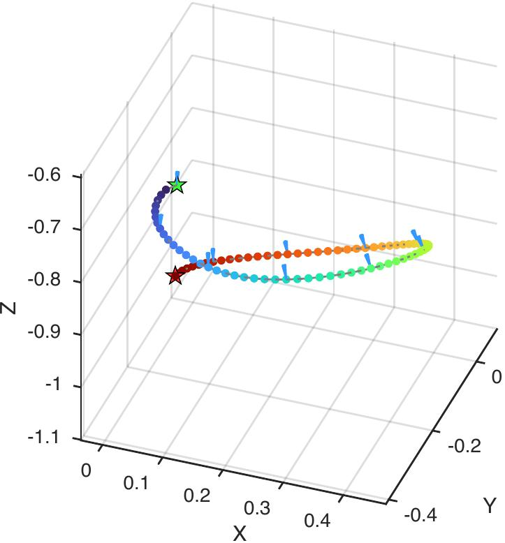
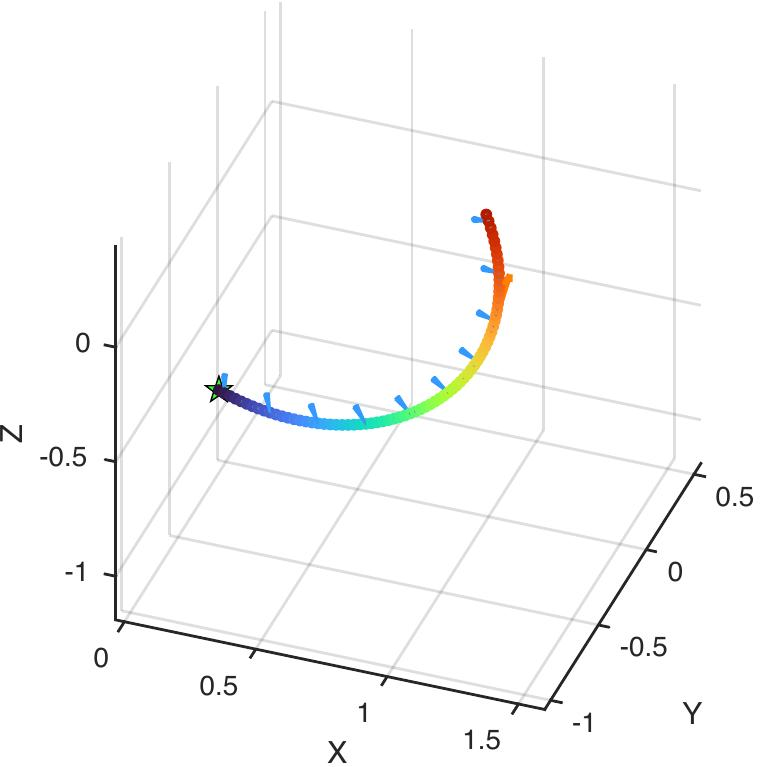
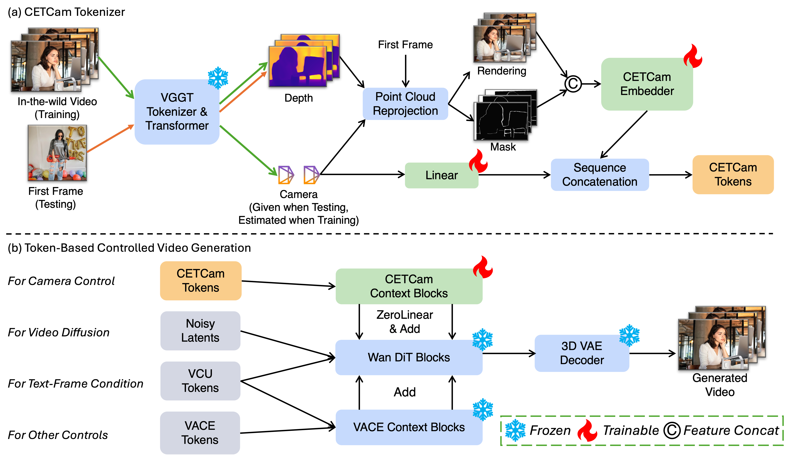

TL;DR: A camera-controllable video generation framework that requires no camera annotations, using geometry-aware tokenization to achieve state-of-the-art consistency and extensibility.
Abstract
Achieving precise camera control in video generation remains challenging, as it often relies on camera pose annotations that are difficult to scale to large, dynamic datasets and are frequently inconsistent with depth estimation, leading to train–test discrepancies. We introduce CETCam, a camera-controllable video generation framework that eliminates the need for camera annotations through consistent and extensible tokenization. CETCam incorporates recent advances in geometry foundation models (e.g., VGGT) to estimate depth and camera parameters, converting them into unified, geometry-aware tokens that are seamlessly integrated into a pretrained video diffusion backbone via lightweight context blocks. Trained in two progressive phases, CETCam learns robust camera controllability from diverse raw videos and refines fine-grained visual quality on curated high-fidelity data. Extensive experiments across multiple benchmarks demonstrate state-of-the-art geometric consistency, temporal stability, and visual realism. Moreover, CETCam exhibits strong adaptability to additional control modalities (e.g., inpainting or layout), highlighting its flexibility beyond camera control.
Camera-controlled Video Generation
Camera trajectories are described in natural language for readability, while the CETCam model takes raw camera trajectories as input.
Diverse Scenes Results
CETCam can produce higher-quality videos with precise camera control in diverse scenes.
Same Camera, Different Source Images


Same Source Image, Different Cameras
Extensibility Results


Comparisons between Uni3C and Ours
Comparison with the closest concurrent work Uni3C. Top: Uni3C renderings fail to accurately follow the intended camera motion and exhibit geometric distortions and outliers due to inconsistent 3D estimation. Bottom: These inaccuracies in renderings lead to spatial misalignment and visible artifacts in the generated videos of Uni3C, while our generated videos do not exhibit these artifacts.
Method

Overview of the CETCam I2V generation framework. (a) CETCam Tokenizer. Given an in-the-wild training video or a test-time frame input, the frames are processed by VGGT to predict the depth maps. In training, camera poses are also estimated. The predicted depths and camera poses are used for point cloud reprojection to generate renderings of the first frame and the corresponding masks. These renderings, masks, and camera poses are embedded and fused to produce CETCam tokens. (b) Token-Based Controlled Video Generation. We leverage various types of tokens with rich and diverse functions, including CETCam tokens, noisy latents, VCU tokens, and VACE tokens. CETCam tokens are consumed in learnable CETCam context blocks, which are connected to pre-trained Wan DiT blocks using zero-linear and add functions. Other tokens are processed through VACE context blocks and Wan DiT blocks. Finally, the output tokens are decoded by a 3D VAE to generate a video.
BibTeX
@inproceedings{zhao2026cetcam,
title = {{CETCam}: Camera-Controllable Video Generation via Consistent and Extensible Tokenization},
author = {Zhao, Zelin and Gong, Xinyu and Liu, Bangya and Song, Ziyang and Zhang, Jun and Wu, Suhui and Chen, Yongxin and Zhang, Hao},
booktitle = {IEEE/CVF Conference on Computer Vision and Pattern Recognition (CVPR) Findings},
year = {2026}
}